At first, I experimented with building a rendering pipeline off of libgdx (a rendering library) and Unity 3D (a game engine). However, I eventually decided to build a rendering engine from scratch both because I wanted to have low-level control to the rendering pipeline and because I wanted to understand the inner workings of a rendering engine. This step was very time consuming but very valuable as I learned how to write modern OpenGL and modern C++.
One of the crucial aspects of the rendering engine is that it had to render an interesting scene with lighting. At first, I thought I could achieve this simply by using a library to import .obj files. However, this proved problematic because I didn't have control over the UV-mapping of the scene and because the library I chose couldn't import scenes created in Blender. I ended up, instead, rendering a scene lit by point lights and made up of cubes and .obj meshes (see figure 0).
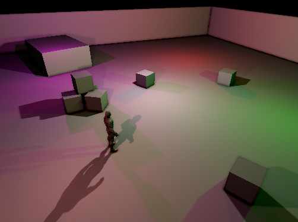
Figure 0: Scene
The core of my rendering pipeline is the real-time hatching algorithm. This leverages standard texture mapping techniques to apply hatching to objects in a scene. The real-time hatching algorithm renders different hatching textures based on the lighting and depth of every pixel. In figure 1, you can see the tilemap of hatching textures I used. I decided to use someone else's pre-generated tonal art map as my hatching textures due to time constraints.
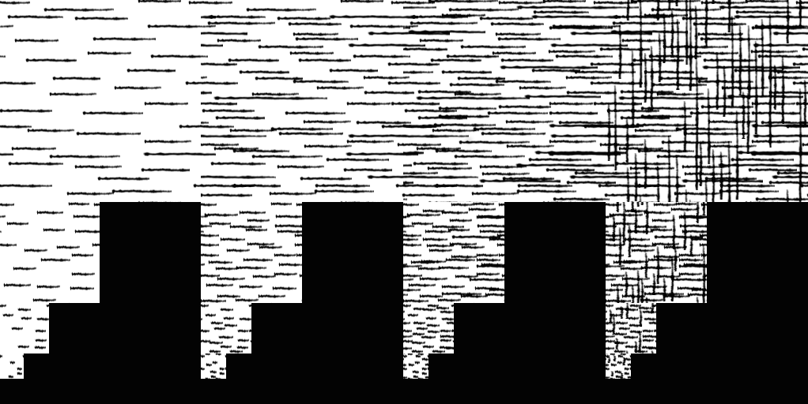
Figure 1: Tilemap of hatching textures (source)
The early shaders I wrote would index into the tilemap based on a computed mip level (related to the depth of a pixel) and tone level (related to the brightness of a pixel). Unfortunately indexing into a tilemap breaks when using bilinear texture filtering-- which is necessary to prevent aliasing (see figure 2).
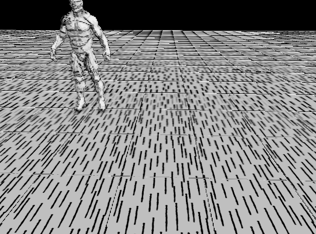
Figure 2: Indexing into a tilemap with bilinear texture filtering.
In addition, the smaller hatching patterns are too small to provide satisfying tiling (see figure 3). Finally, naive blending of the different mip-map levels produced unseemly results (see figure 4). Because of this, I ended up implementing real-time hatching without additional mip-map levels.
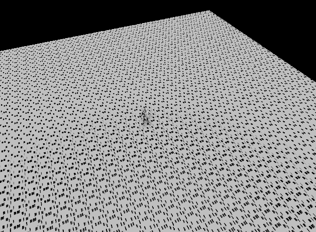
Figure 3: Unsatisfying tiling at large depths.
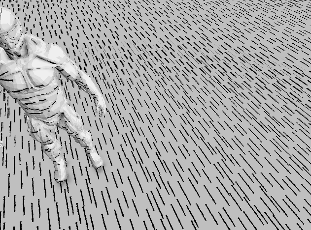
Figure 4: Unsatisfying blending of mip-maps.
When computing SSAO, you need to know the depth of every pixel on the screen and the normals associated with each pixel. The first version of SSAO I wrote (based on the SSAO implementation found Corange) would estimate the normals of every pixel by considering the depths of nearby pixels. This worked very well, except that it introduced artifacts wherever the depths changed dramatically (see figure 5).
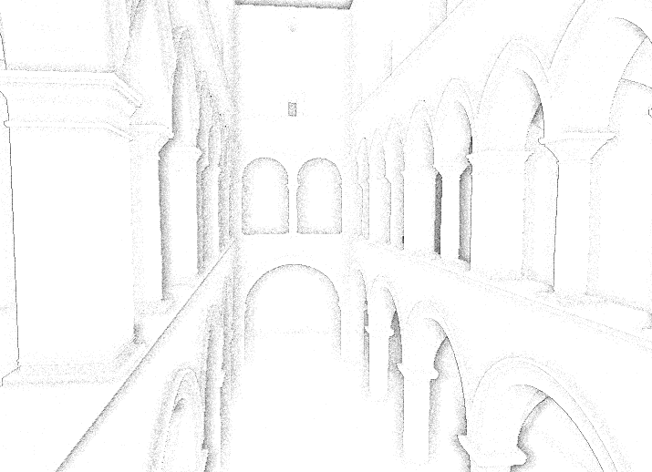
Figure 5: Depth only SSAO
Eventually, I started using deferred rendering, where attributes (like position and normal) are pre-computed per-pixel. Then, I could compute SSAO using the pre-computed per-pixel normals. The initial results were promising but lacked the sharpness I saw in other SSAO implementations (see figure 6).
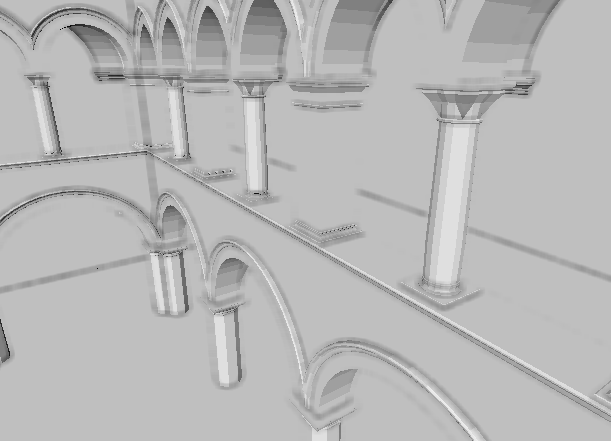
Figure 6: Early version of deferred SSAO
I switched to using two different methods of estimating occlusion. The first uses a hemisphere of samples (based on John Chapman's SSAO tutorial) and the second uses a Poisson disk of samples (based on Christoph Weinzierl-Heigl's SSAO tutorial). The hemisphere method is good for obvious occlusion (see figure 7) while the disk method accentuates creases (see figure 8). In addition, I blurrred the SSAO using a two-pass gaussian blur.
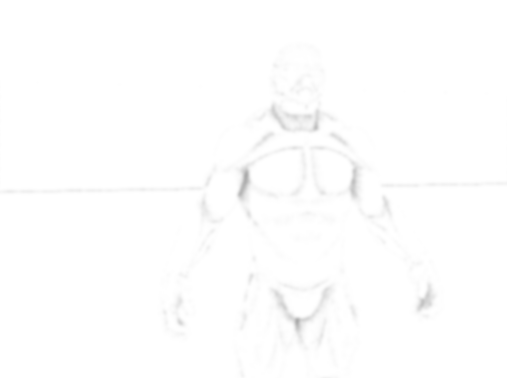
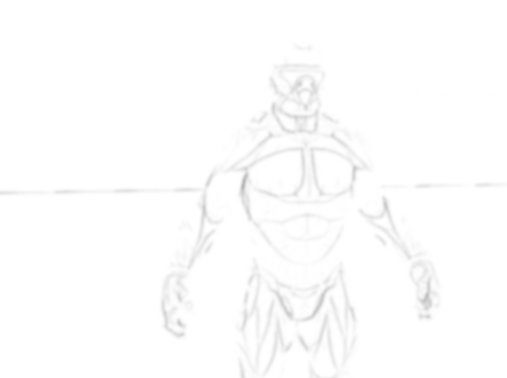
Figure 7 & 8: Hemisphere based and disk based SSAO.
I decided to implement shadows using shadow mapping due to it's ease of implementation. Because my rendering engine uses exclusively point lights, I rendered shadow maps to cube maps (see figure 9).
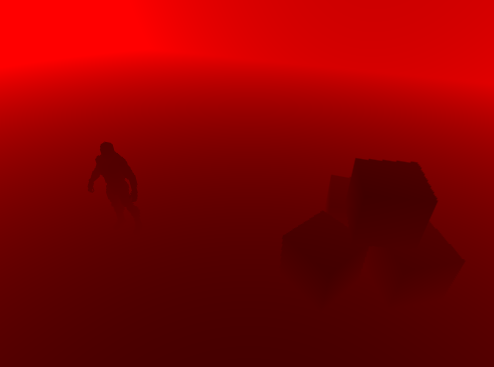
Figure 9: One side of a cube map shadow map.
I also implemented variance shadow mapping (VSM) based on the implementaiton by Christian Forfang and the article by Andrew Lauritzen in GPU Gems 3. This algorithm improves upon shadow mapping by storing not only the depth at each pixel, but also depth^2. This simple addition makes it possible to filter or blur the shadow map by allowing you to retrieve the depth variance at every location in in the shadow map (see figure 10, 11, 12).
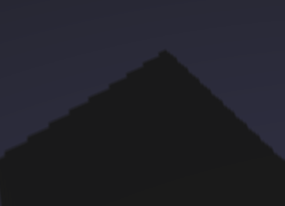
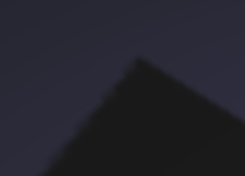
Figure 10, 11, 12: Shadows computed with SM, filtered VSM, blurred VSM
I initially implemented cel-shading but decided that it looked too absurd with point light sources (see figure 13).
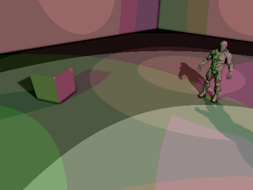
Figure 13: Cel-shading.